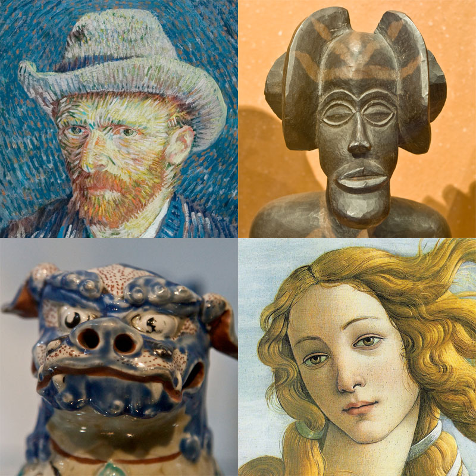
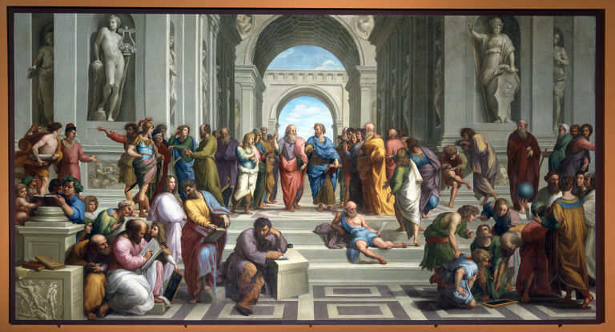
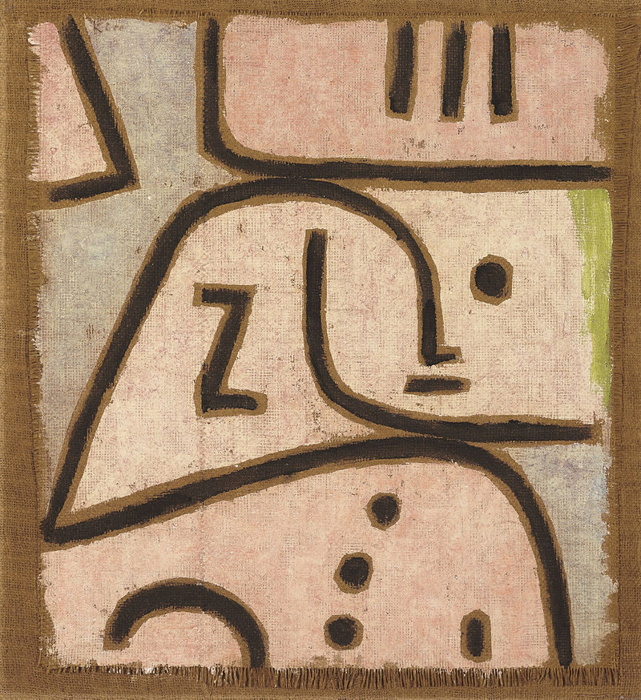

- SOCRATES
- ARISTOTELES
- PLATON
Art & Life
What is the Art?
Art is Long , Life is Short.
That is the question! by Hamlet.
ART

Art is a diverse range of human activities in creating visual,
auditory or performing artifacts (artworks), expressing the author's imaginative,
conceptual ideas, or technical skill, intended to be appreciated for their beauty
or emotional power.[1][2] In their most general form these activities include
the production of works of art, the criticism of art, the study of the history of art,
and the aesthetic dissemination of art.
PHILOSOPHER

philosopher is someone who practices philosophy, which involves rational inquiry into
areas that are outside either theology or science.[1] The term "philosopher" comes from
the Ancient Greek, φιλόσοφος (philosophos), meaning "lover of wisdom". The coining of
the term has been attributed to the Greek thinker Pythagoras (6th century BC).[2]
PERSON

person is a being that has certain capacities or attributes such as reason, morality,
consciousness or self-consciousness, and being a part of a culturally established form
of social relations such as kinship, ownership of property, or legal responsibility.
The defining features of personhood and consequently what makes a person count as a person
differ widely among cultures and contexts.